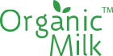
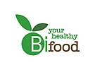

Безлактозна продукція
Organic Milk
Продукція ТОВ «Органік Мілк» є унікальною для вітчизняного ринку за сукупністю таких характеристик, як користь, безпека споживання, смакові якості та кулінарні можливості. Особливість продукції полягає в тому, що, насамперед, у процесі переробки молока та виробництва молочних продуктів використовуються лише органічне молоко та кисломолочні бактерії, що мають відповідність міжнародним вимогам органічного виробництва.
bifood
Bifood - your healthy food бренд здорового харчування
Molokia
Компанія «Молокія» – це велика сім'я, в якій немає зайвих людей. Усі свої. І вже двадцять років ми разом робимо чесні молочні продукти, в яких теж нема нічого зайвого. Мабуть, інакше ми просто не можемо. В час війни ми знайшли в собі дещо особливе. Те, що дає фермерам сили доглядати корів. Водіям – доставляти молоко. Молокіянам – робити йогурти, сметани і кефіри. Пакувати, складати, розвозити, відправляти і знову робити. Навіть якщо страшно і небезпечно. Це сміливість бути Україною. Зберігаймо її, що б там не було. І щоб молочка далі була
Milkoff

№1 інтернет-магазин продуктів без лактози
healthy choice

Healthy Choice- це вибір на користь здорового харчування без необхідності обмежувати себе.